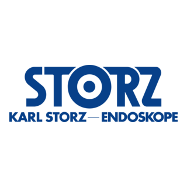

Welcome to my website!
Hi! My name is John Chen, and I just recently graduated from the University of California, Santa Barbara with a Masters of Science in Mechanical Engineering in June 2025.
I am now looking to get out in the world to apply my engineering knowledge as well as learn even more from all the professionals witin the engineering industry. School is only one stop in this engineering learning journey.
Outside of engineering, I do enjoy programming, and I have been trying to get back in touch with my creative side. You can find my art here.
Education
University of California, Santa Barbara
Master of Science, Mechanical Engineering
Conferred June 2025
Santa Barbara, California, USA
Master of Science, Mechanical Engineering
Conferred June 2025
Santa Barbara, California, USA
University of California, Santa Barbara
Bachelor of Science, Mechanical Engineering
Capstone Project: ContraTech
Conferred June 2024
Santa Barbara, California, USA
Bachelor of Science, Mechanical Engineering
Capstone Project: ContraTech
Conferred June 2024
Santa Barbara, California, USA
Experience

Karl Storz Imaging - Advanced Manufacturing Technology Intern/Co-op
June 2023 - December 2024
Santa Barbara, CA, USA
- Integrated a reprocessing system to automate and speed up testing of endoscope camera heads to save both time (months of lead time) and cost (thousands of dollars) for R&D per prototype, drastically increasing testing efficiency
- Performed a design of experiments (DOE) to analyze input effects and to create a model for output prediction
- Recommended novel cost-saving manufacturing processes based on comparative data taken from a surface profilometer, colormeter, and microscope camera to meet company quality standards, cutting costs and decreasing manufacturing limitations
Department: Advanced Manufacturing Technology (AMT)
June 2023 - December 2024
Santa Barbara, CA, USA
- Integrated a reprocessing system to automate and speed up testing of endoscope camera heads to save both time (months of lead time) and cost (thousands of dollars) for R&D per prototype, drastically increasing testing efficiency
- Performed a design of experiments (DOE) to analyze input effects and to create a model for output prediction
- Recommended novel cost-saving manufacturing processes based on comparative data taken from a surface profilometer, colormeter, and microscope camera to meet company quality standards, cutting costs and decreasing manufacturing limitations
Department: Advanced Manufacturing Technology (AMT)
UCSB Mechanical Engineering - Teaching Assistant, Part-Time
September 2024 - June 2025
Santa Barbara, CA, USA
- Taught/led sections for the following classes:
September 2024 - June 2025
Santa Barbara, CA, USA
- Taught/led sections for the following classes:
- ME105 Engineering Lab Led lab sections with experiments covering solid mechancis, heat transfer, fluid mechancis, and vibrations
- ME127 Mechanisms Led lab sections covering the construction and programming of a cardboard robot for challenge course completion
- ME153 Junior Design Assisted six third-year teams in the design and progress management of their quarter-long projects
Papers
Dynamic Phase Extraction: Applications in Pulse Rate Variability (June 2022)
Published in Applied Psychophysiology and Biofeedback
DOI: doi.org/10.1007/s10484-022-09549-z
My role in this project was the development of the Arduino peak detection code, which calculated heart rate and pulse rate variability among other heart beat metrics. Input data was collected from a photoplethysmography (PPG) sensor attached to the user's finger.
Published in Applied Psychophysiology and Biofeedback
DOI: doi.org/10.1007/s10484-022-09549-z
My role in this project was the development of the Arduino peak detection code, which calculated heart rate and pulse rate variability among other heart beat metrics. Input data was collected from a photoplethysmography (PPG) sensor attached to the user's finger.
Contact
Below are some of the ways you can contact me.